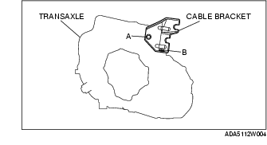

Manual transaxle removal/installation [F35M-R]
1. Disconnect the negative battery cable.
2. Remove the following parts:
- (1) Battery, battery tray and battery tray bracket.
- (2) Air cleaner cover. (See INTAKE-AIR SYSTEM REMOVAL/INSTALLATION [ZY].)
- (3) Wheels, tires and splash shields.
- (4) EGR pipe. (See INTAKE-AIR SYSTEM REMOVAL/INSTALLATION [ZY].)
3. Drain the transaxle oil into a suitable container.
4. Remove in the order indicated in the table.
5. Install in the reverse order of removal.
6. Add the specified amount of specified transaxle oil.
7. Warm up the engine and transaxle, inspect for oil leakage, and inspect the transaxle operation.

.
No.4 Engine Mount Removal Note
1. Remove the dipstick of engine.
2. Using the bolts part number 99794 1025 or M10× 1.25, length 25 mm {0.98 in} to install the SST to the position as shown in the figure.

- • When attaching the SST in the engine rear side, install a suitable nut between the engine and the SST.

Tightening torque
3. Install the SST using the following procedure.

-
(1) Install the right rear shaft of the SST to the bolt of the right shock absorber as shown in the figure.

- (2) Install the left rear shaft of the SST to the bolt of the left shock absorber. (Identical position to the right side)
-
(3) Install front foot No.1 to the right front shaft of the SST and insert it into the shroud panel in the position shown in the figure.

- (4) Install front foot No.1 to the left front shaft of the SST and insert it into the shroud panel (identical position to right side).
- (5) Adjust the positions of the SST side bars so that they are the same height (left and right) and horizontal.
- (6) Make sure each joint is securely tightened.
4. Support the engine using the SST.

5. Remove the battery tray bracket, No.4 engine mount rubber and bracket.
Manual transaxle Removal Note
1. Adjust the SST and lean the engine toward the transaxle.

2. Support the transaxle on a jack.
3. Remove the transaxle mounting bolts.
4. Remove the transaxle.

Manual Transaxle Installation Note
1. Set the transaxle on a jack and lift it.
2. Install the transaxle mounting bolts.

Tightening torque
- A: 63.7-89.2 N·m
- {6.5-9.0 kgf·m, 47.0-65.7 ft·lbf}
- B: 37.3-52.0 N·m
- {3.8-5.3 kgf·m, 27.5-38.3 ft·lbf}
No.4 Engine Mount Rubber Installation Note
1. Verify that the No.4 engine mount rubber is installed as shown.

2. Adjust the SST (engine support), and align the hole of the No.4 engine mount rubber with the stud bolt of transaxle.
3. Set the transaxle on a garage jack and lift it.
4. Tighten nuts A, B in the order of A to B.

Tightening torque
No.1 Engine Mount Installation Note
- • Align the transaxle bolt holes and the engine mount exactly. Any misalignment can result in bolts and bolt holes becoming damaged or stripped during installation.
1. Adjust the SST (engine support), and align the hole of the No.1 engine mount with the bolt hole of transaxle.
2. Tighten bolt.

Tightening torque
Cable Bracket Installation Note
1. Lightly tighten bolts A, B.
2. Tighten bolts A, B in the order of A to B.
